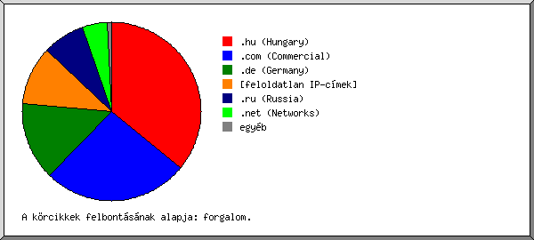
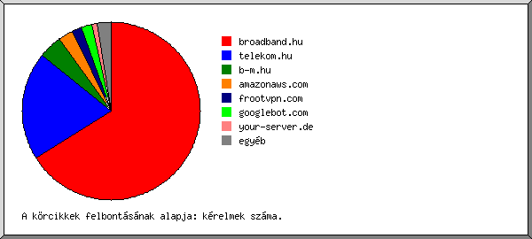
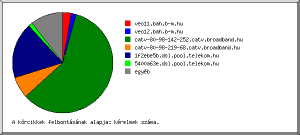
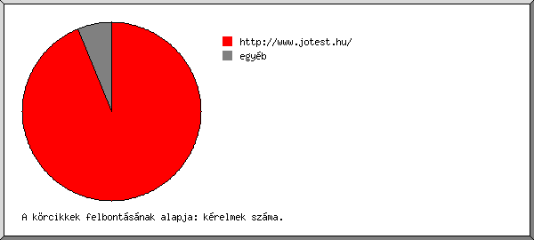
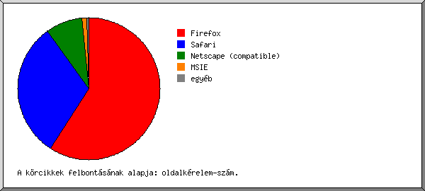
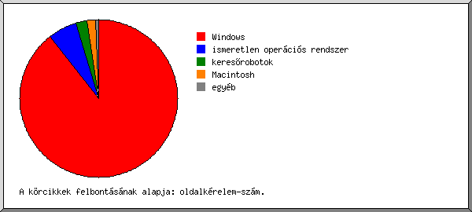
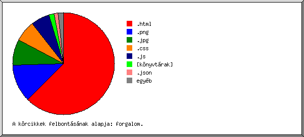
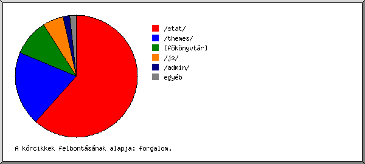
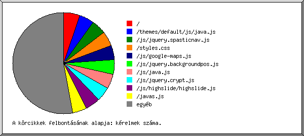

Web Szerver Statisztika: [www.jotest.hu]
Web Szerver Statisztika: [www.jotest.hu]
Futás kezdete pén, 2015. okt. 16. 01:18.
Kérelmek analizálva: kedd, 2015. szept. 01. 06:18 - csüt, 2015. okt. 15. 23:22 (44,71 nap).
Web Szerver Statisztika: [www.jotest.hu]Futás kezdete pén, 2015. okt. 16. 01:18.
Kérelmek analizálva: kedd, 2015. szept. 01. 06:18 - csüt, 2015. okt. 15. 23:22 (44,71 nap).
(Ugrás: Oldal teteje | Általános összesítés | Éves Jelentés | Havi jelentés | Heti jelentés | Napi jelentés | Napi összesítés | Óránkénti összesítés | Domain szerinti jelentés | Szervezet szerinti jelentés | Host szerinti jelentés | Hivatkozó site-ok jelentése | Böngészõk szerinti összesítés | A böngészõ operációs rendszere szerinti jelentés | Fájltípus szerinti jelentés | Könyvtár szerinti jelentés | Kérelem szerinti jelentés)
A zárójeles számok utalnak: 7 nap 2015. okt. 16. 01:18.
Összes sikeres kérelem: 5.978 (3.764)
Átlagos sikeres napi kérelem: 133 (537)
Összes sikeres oldal kérelem: 829 (395)
Átlagos sikeres napi oldal kérelem: 18 (56)
Sikertelen kérelem: 16 (6)
Átirányított kérelem: 121 (27)
Különbözõ kért fájlok: 176 (124)
Különbözõ kiszolgált host-ok: 145 (36)
Átvitt adat: 35,65 megabyte (15,14 megabyte)
Átlagos napi adatátvitel: 816,52 kilobyte (2,16 megabyte)
(Ugrás: Oldal teteje | Általános összesítés | Éves Jelentés | Havi jelentés | Heti jelentés | Napi jelentés | Napi összesítés | Óránkénti összesítés | Domain szerinti jelentés | Szervezet szerinti jelentés | Host szerinti jelentés | Hivatkozó site-ok jelentése | Böngészõk szerinti összesítés | A böngészõ operációs rendszere szerinti jelentés | Fájltípus szerinti jelentés | Könyvtár szerinti jelentés | Kérelem szerinti jelentés)
Minden egység ( ) 20 oldal kérelmeit vagy egy részét jelképezi.
) 20 oldal kérelmeit vagy egy részét jelképezi.
| év | kér. | oldal | |
|---|---|---|---|
| 2015 | 5978 | 829 |    |
Legaktívabb év: 2015 (829 oldal kérelmeit).
(Ugrás: Oldal teteje | Általános összesítés | Éves Jelentés | Havi jelentés | Heti jelentés | Napi jelentés | Napi összesítés | Óránkénti összesítés | Domain szerinti jelentés | Szervezet szerinti jelentés | Host szerinti jelentés | Hivatkozó site-ok jelentése | Böngészõk szerinti összesítés | A böngészõ operációs rendszere szerinti jelentés | Fájltípus szerinti jelentés | Könyvtár szerinti jelentés | Kérelem szerinti jelentés)
Minden egység () 20 oldal kérelmeit vagy egy részét jelképezi.
| hónap | kér. | oldal | |
|---|---|---|---|
| 2015. szept. | 1715 | 229 |  |
| 2015. okt . | 4263 | 600 |  |
Legforgalmasabb hónap: 2015. okt. (600 oldal kérelmeit).
(Ugrás: Oldal teteje | Általános összesítés | Éves Jelentés | Havi jelentés | Heti jelentés | Napi jelentés | Napi összesítés | Óránkénti összesítés | Domain szerinti jelentés | Szervezet szerinti jelentés | Host szerinti jelentés | Hivatkozó site-ok jelentése | Böngészõk szerinti összesítés | A böngészõ operációs rendszere szerinti jelentés | Fájltípus szerinti jelentés | Könyvtár szerinti jelentés | Kérelem szerinti jelentés)
Minden egység () 10 oldal kérelmeit vagy egy részét jelképezi.
| hét eleje | kér. | oldal | |
|---|---|---|---|
| 15.aug .30 | 1359 | 72 | |
| 15.szept. 6 | 64 | 23 | |
| 15.szept.13 | 69 | 15 | |
| 15.szept.20 | 168 | 81 | |
| 15.szept.27 | 81 | 53 | |
| 15.okt . 4 | 596 | 230 | |
| 15.okt .11 | 3641 | 355 | |
Legforgalmasabb hét: hét eleje 15.okt.11 (355 oldal kérelmeit).
(Ugrás: Oldal teteje | Általános összesítés | Éves Jelentés | Havi jelentés | Heti jelentés | Napi jelentés | Napi összesítés | Óránkénti összesítés | Domain szerinti jelentés | Szervezet szerinti jelentés | Host szerinti jelentés | Hivatkozó site-ok jelentése | Böngészõk szerinti összesítés | A böngészõ operációs rendszere szerinti jelentés | Fájltípus szerinti jelentés | Könyvtár szerinti jelentés | Kérelem szerinti jelentés)
Minden egység () 8 oldal kérelmeit vagy egy részét jelképezi.
| dátum | kér. | oldal | |
|---|---|---|---|
| 15.szept. 4 | 10 | 2 | |
| 15.szept. 5 | 3 | 1 | |
| 15.szept. 6 | 11 | 5 | |
| 15.szept. 7 | 18 | 6 | |
| 15.szept. 8 | 8 | 2 | |
| 15.szept. 9 | 9 | 4 | |
| 15.szept.10 | 7 | 3 | |
| 15.szept.11 | 7 | 2 | |
| 15.szept.12 | 4 | 1 | |
| 15.szept.13 | 8 | 3 | |
| 15.szept.14 | 41 | 7 | |
| 15.szept.15 | 4 | 1 | |
| 15.szept.16 | 4 | 1 | |
| 15.szept.17 | 6 | 1 | |
| 15.szept.18 | 6 | 2 | |
| 15.szept.19 | 0 | 0 | |
| 15.szept.20 | 4 | 1 | |
| 15.szept.21 | 44 | 11 | |
| 15.szept.22 | 23 | 16 | |
| 15.szept.23 | 8 | 5 | |
| 15.szept.24 | 26 | 21 | |
| 15.szept.25 | 59 | 25 | |
| 15.szept.26 | 4 | 2 | |
| 15.szept.27 | 7 | 1 | |
| 15.szept.28 | 4 | 1 | |
| 15.szept.29 | 17 | 12 | |
| 15.szept.30 | 27 | 24 | |
| 15.okt . 1 | 9 | 4 | |
| 15.okt . 2 | 15 | 10 | |
| 15.okt . 3 | 2 | 1 | |
| 15.okt . 4 | 10 | 7 | |
| 15.okt . 5 | 10 | 7 | |
| 15.okt . 6 | 382 | 117 | |
| 15.okt . 7 | 24 | 16 | |
| 15.okt . 8 | 44 | 40 | |
| 15.okt . 9 | 116 | 33 | |
| 15.okt .10 | 10 | 10 | |
| 15.okt .11 | 26 | 14 | |
| 15.okt .12 | 10 | 6 | |
| 15.okt .13 | 70 | 20 | |
| 15.okt .14 | 61 | 30 | |
| 15.okt .15 | 3474 | 285 | |
Legforgalmasabb nap: 15.okt.15 (285 oldal kérelmeit).
(Ugrás: Oldal teteje | Általános összesítés | Éves Jelentés | Havi jelentés | Heti jelentés | Napi jelentés | Napi összesítés | Óránkénti összesítés | Domain szerinti jelentés | Szervezet szerinti jelentés | Host szerinti jelentés | Hivatkozó site-ok jelentése | Böngészõk szerinti összesítés | A böngészõ operációs rendszere szerinti jelentés | Fájltípus szerinti jelentés | Könyvtár szerinti jelentés | Kérelem szerinti jelentés)
Minden egység () 8 oldal kérelmeit vagy egy részét jelképezi.
| nap | kér. | oldal | |
|---|---|---|---|
| vas | 66 | 31 | |
| hét | 127 | 38 | |
| kedd | 1705 | 219 | |
| sze | 264 | 95 | |
| csüt | 3580 | 357 | |
| pén | 213 | 74 | |
| szo | 23 | 15 | |
(Ugrás: Oldal teteje | Általános összesítés | Éves Jelentés | Havi jelentés | Heti jelentés | Napi jelentés | Napi összesítés | Óránkénti összesítés | Domain szerinti jelentés | Szervezet szerinti jelentés | Host szerinti jelentés | Hivatkozó site-ok jelentése | Böngészõk szerinti összesítés | A böngészõ operációs rendszere szerinti jelentés | Fájltípus szerinti jelentés | Könyvtár szerinti jelentés | Kérelem szerinti jelentés)
Minden egység () 3 oldal kérelmeit vagy egy részét jelképezi.
| ó. | kér. | oldal | |
|---|---|---|---|
| 0 | 64 | 24 | |
| 1 | 958 | 63 | |
| 2 | 432 | 63 | |
| 3 | 615 | 48 | |
| 4 | 7 | 4 | |
| 5 | 14 | 13 | |
| 6 | 666 | 32 | |
| 7 | 442 | 29 | |
| 8 | 18 | 6 | |
| 9 | 238 | 48 | |
| 10 | 966 | 144 | |
| 11 | 592 | 61 | |
| 12 | 248 | 43 | |
| 13 | 47 | 15 | |
| 14 | 118 | 34 | |
| 15 | 44 | 19 | |
| 16 | 67 | 36 | |
| 17 | 14 | 8 | |
| 18 | 57 | 25 | |
| 19 | 42 | 9 | |
| 20 | 19 | 15 | |
| 21 | 43 | 16 | |
| 22 | 88 | 20 | |
| 23 | 179 | 54 | |
(Ugrás: Oldal teteje | Általános összesítés | Éves Jelentés | Havi jelentés | Heti jelentés | Napi jelentés | Napi összesítés | Óránkénti összesítés | Domain szerinti jelentés | Szervezet szerinti jelentés | Host szerinti jelentés | Hivatkozó site-ok jelentése | Böngészõk szerinti összesítés | A böngészõ operációs rendszere szerinti jelentés | Fájltípus szerinti jelentés | Könyvtár szerinti jelentés | Kérelem szerinti jelentés)

domain listázása, rendezve: forgalom.
| kér. | %byte | domain |
|---|---|---|
| 5414 | 35,90% | .hu (Hungary) |
| 381 | 26,29% | .com (Commercial) |
| 62 | 14,24% | .de (Germany) |
| 51 | 10,58% | [feloldatlan IP-címek] |
| 35 | 7,68% | .ru (Russia) |
| 23 | 4,63% | .net (Networks) |
| 2 | 0,44% | .jp (Japan) |
| 2 | 0,22% | .ua (Ukraine) |
| 6 | 0,02% | .sc (Seychelles) |
| 1 | .org (Non Profit Making Organisations) | |
| 1 | .io (British Indian Ocean Territory) |
(Ugrás: Oldal teteje | Általános összesítés | Éves Jelentés | Havi jelentés | Heti jelentés | Napi jelentés | Napi összesítés | Óránkénti összesítés | Domain szerinti jelentés | Szervezet szerinti jelentés | Host szerinti jelentés | Hivatkozó site-ok jelentése | Böngészõk szerinti összesítés | A böngészõ operációs rendszere szerinti jelentés | Fájltípus szerinti jelentés | Könyvtár szerinti jelentés | Kérelem szerinti jelentés)

Az elsõ 20 szervezet listázása a következõ szerint: kérelmek száma, rendezve: kérelmek száma.
| kér. | %byte | szervezet |
|---|---|---|
| 3951 | 30,09% | broadband.hu |
| 1177 | 3,59% | telekom.hu |
| 261 | 2,01% | b-m.hu |
| 157 | 0,93% | amazonaws.com |
| 111 | 24,36% | frootvpn.com |
| 110 | 0,97% | googlebot.com |
| 62 | 14,24% | your-server.de |
| 41 | 9,00% | 193.201 |
| 34 | 7,46% | mts-nn.ru |
| 17 | 0,16% | invitel.hu |
| 17 | 3,73% | uch.net |
| 8 | 0,06% | t-online.hu |
| 6 | 0,02% | sc |
| 2 | 0,44% | 222.39 |
| 2 | 0,03% | chinamobile.com |
| 2 | 0,44% | rev.iijgio.jp |
| 1 | 0,01% | 218.207 |
| 1 | 0,01% | hub-one.net |
| 1 | 0,22% | opera-mini.net |
| 1 | 0,22% | 120 |
| 16 | 2,03% | [nincs felsorolva: 16 szervezet] |
(Ugrás: Oldal teteje | Általános összesítés | Éves Jelentés | Havi jelentés | Heti jelentés | Napi jelentés | Napi összesítés | Óránkénti összesítés | Domain szerinti jelentés | Szervezet szerinti jelentés | Host szerinti jelentés | Hivatkozó site-ok jelentése | Böngészõk szerinti összesítés | A böngészõ operációs rendszere szerinti jelentés | Fájltípus szerinti jelentés | Könyvtár szerinti jelentés | Kérelem szerinti jelentés)

Az elsõ 50 host listázása a következõ szerint: kérelmek száma, betûrend szerint rendezve.
| kér. | %byte | host |
|---|---|---|
| 41 | 9,00% | 193.201.227.77 |
| 3 | 0,02% | ec2-52-16-160-197.eu-west-1.compute.amazonaws.com |
| 3 | 0,02% | ec2-52-17-224-231.eu-west-1.compute.amazonaws.com |
| 4 | 0,02% | ec2-52-17-254-53.eu-west-1.compute.amazonaws.com |
| 4 | 0,02% | ec2-52-18-136-224.eu-west-1.compute.amazonaws.com |
| 3 | 0,02% | ec2-52-18-64-164.eu-west-1.compute.amazonaws.com |
| 3 | 0,02% | ec2-52-19-126-20.eu-west-1.compute.amazonaws.com |
| 3 | 0,02% | ec2-52-19-162-49.eu-west-1.compute.amazonaws.com |
| 3 | 0,02% | ec2-52-19-171-242.eu-west-1.compute.amazonaws.com |
| 4 | 0,02% | ec2-52-19-206-238.eu-west-1.compute.amazonaws.com |
| 3 | 0,02% | ec2-52-30-92-66.eu-west-1.compute.amazonaws.com |
| 4 | 0,88% | c-178-73-192-253.ip4.frootvpn.com |
| 5 | 1,10% | c-178-73-192-56.ip4.frootvpn.com |
| 8 | 1,76% | c-178-73-193-10.ip4.frootvpn.com |
| 19 | 4,17% | c-188-126-90-141.ip4.frootvpn.com |
| 4 | 0,88% | c-188-126-91-245.ip4.frootvpn.com |
| 20 | 4,39% | c-46-246-81-183.ip4.frootvpn.com |
| 13 | 2,85% | c-46-246-81-80.ip4.frootvpn.com |
| 5 | 1,10% | c-46-246-83-4.ip4.frootvpn.com |
| 4 | 0,88% | c-46-246-86-56.ip4.frootvpn.com |
| 25 | 5,49% | c-46-246-86-68.ip4.frootvpn.com |
| 4 | 0,88% | c-46-246-87-123.ip4.frootvpn.com |
| 7 | 0,03% | crawl-66-249-64-63.googlebot.com |
| 5 | 0,02% | crawl-66-249-64-68.googlebot.com |
| 8 | 0,04% | crawl-66-249-64-73.googlebot.com |
| 7 | 0,01% | crawl-66-249-67-237.googlebot.com |
| 7 | 0,04% | crawl-66-249-67-245.googlebot.com |
| 7 | 0,06% | crawl-66-249-67-253.googlebot.com |
| 4 | 0,03% | crawl-66-249-67-88.googlebot.com |
| 18 | 0,07% | crawl-66-249-75-237.googlebot.com |
| 17 | 0,06% | crawl-66-249-75-245.googlebot.com |
| 18 | 0,55% | crawl-66-249-75-253.googlebot.com |
| 3 | 0,01% | crawl-66-249-78-32.googlebot.com |
| 45 | 10,72% | static.18.16.9.5.clients.your-server.de |
| 16 | 3,51% | static.121.37.9.5.clients.your-server.de |
| 165 | 1,59% | veo11.bah.b-m.hu |
| 96 | 0,42% | veo12.bah.b-m.hu |
| 3520 | 21,66% | catv-80-98-142-252.catv.broadband.hu |
| 406 | 7,53% | catv-80-98-219-68.catv.broadband.hu |
| 25 | 0,90% | catv-89-134-192-222.catv.broadband.hu |
| 17 | 0,16% | 87.97.3.115.pool.invitel.hu |
| 4 | 0,03% | dsl5400a014.pool.t-online.hu |
| 4 | 0,03% | dsl5401d82c.pool.t-online.hu |
| 1082 | 3,32% | 1f2ebe5b.dsl.pool.telekom.hu |
| 82 | 0,15% | 5400a63e.dsl.pool.telekom.hu |
| 13 | 0,11% | 5400fa10.dsl.pool.telekom.hu |
| 17 | 3,73% | static-193.108.249.33.uch.net |
| 20 | 4,39% | 95-37-133-182.dynamic.mts-nn.ru |
| 14 | 3,07% | 95-37-224-182.dynamic.mts-nn.ru |
| 6 | 0,02% | www.whois.sc |
| 160 | 4,21% | [nincs felsorolva: 95 host] |
(Ugrás: Oldal teteje | Általános összesítés | Éves Jelentés | Havi jelentés | Heti jelentés | Napi jelentés | Napi összesítés | Óránkénti összesítés | Domain szerinti jelentés | Szervezet szerinti jelentés | Host szerinti jelentés | Hivatkozó site-ok jelentése | Böngészõk szerinti összesítés | A böngészõ operációs rendszere szerinti jelentés | Fájltípus szerinti jelentés | Könyvtár szerinti jelentés | Kérelem szerinti jelentés)

Az elsõ 30 hivatkozó site listázása a következõ szerint: kérelmek száma, rendezve: kérelmek száma.
| kér. | site |
|---|---|
| 5127 | http://www.jotest.hu/ |
| 39 | http://www.kozvetlen-allasok.hu/ |
| 10 | http://detki.cf/ |
| 10 | http://lj1.co/ |
| 9 | http://yparah.wix.com/ |
| 9 | http://xn--b1agjtqbo.xn--80aswg/ |
| 9 | http://okanokay.com/ |
| 8 | http://samolet.reformal.ru/ |
| 6 | http://hotel-fili.ru/ |
| 5 | http://buy-essay-online.ga/ |
| 5 | http://www.peacetech.net/ |
| 5 | http://muzzabest.hostenko.com/ |
| 5 | http://sanki-nika-detyam-4.aircus.com/ |
| 5 | http://pieroovermars.com/ |
| 5 | http://muzzalife.ru/ |
| 5 | http://webcams.just-host.biz/ |
| 5 | http://sanki-nika2.aircus.com/ |
| 5 | http://guatequesis.com/ |
| 5 | http://gamedistribute.com/ |
| 5 | http://samokat.aircus.com/ |
| 5 | https://twitter.com/ |
| 5 | http://wewriteessay.ml/ |
| 5 | http://carmods.ru/ |
| 5 | http://sanki-kolyaska-nika-detyam-3.aircus.com/ |
| 5 | http://sexkun.com/ |
| 5 | http://childcars.aircus.com/ |
| 5 | http://writing-my-essay.ml/ |
| 5 | http://annamodel.aircus.com/ |
| 5 | http://desguacestui.com/ |
| 5 | http://nika-detyam-5-sanki.aircus.com/ |
| 126 | [nincs felsorolva: 50 site] |
(Ugrás: Oldal teteje | Általános összesítés | Éves Jelentés | Havi jelentés | Heti jelentés | Napi jelentés | Napi összesítés | Óránkénti összesítés | Domain szerinti jelentés | Szervezet szerinti jelentés | Host szerinti jelentés | Hivatkozó site-ok jelentése | Böngészõk szerinti összesítés | A böngészõ operációs rendszere szerinti jelentés | Fájltípus szerinti jelentés | Könyvtár szerinti jelentés | Kérelem szerinti jelentés)

böngészõ listázása legalább 1 oldal kérelmet, rendezve: oldalkérelem-szám.
| srsz. | kér. | oldal | böngészõ |
|---|---|---|---|
| 1 | 3913 | 489 | Firefox |
| 3781 | 360 | Firefox/41 | |
| 67 | 67 | Firefox/36 | |
| 38 | 38 | Firefox/37 | |
| 14 | 14 | Firefox/33 | |
| 7 | 7 | Firefox/31 | |
| 6 | 3 | Firefox/3 | |
| 2 | 1799 | 258 | Safari |
| 1761 | 244 | Safari/537 | |
| 38 | 14 | Safari/600 | |
| 3 | 248 | 69 | Netscape (compatible) |
| 4 | 10 | 10 | MSIE |
| 6 | 6 | MSIE/6 | |
| 4 | 4 | MSIE/8 | |
| 5 | 3 | 3 | Opera |
| 3 | 3 | Opera/9 | |
| 5 | 0 | [nincs felsorolva: 1 böngészõ] |
(Ugrás: Oldal teteje | Általános összesítés | Éves Jelentés | Havi jelentés | Heti jelentés | Napi jelentés | Napi összesítés | Óránkénti összesítés | Domain szerinti jelentés | Szervezet szerinti jelentés | Host szerinti jelentés | Hivatkozó site-ok jelentése | Böngészõk szerinti összesítés | A böngészõ operációs rendszere szerinti jelentés | Fájltípus szerinti jelentés | Könyvtár szerinti jelentés | Kérelem szerinti jelentés)

op.rsz. listázása, rendezve: oldalkérelem-szám.
| srsz. | kér. | oldal | op.rsz. |
|---|---|---|---|
| 1 | 5682 | 741 | Windows |
| 4705 | 333 | Windows NT | |
| 681 | 297 | ismeretlen verziójú Windows | |
| 293 | 108 | Windows XP | |
| 3 | 3 | Windows Server 2003 | |
| 2 | 191 | 50 | ismeretlen operációs rendszer |
| 3 | 62 | 19 | keresõrobotok |
| 4 | 38 | 14 | Macintosh |
| 5 | 5 | 5 | Unix |
| 5 | 5 | Linux |
(Ugrás: Oldal teteje | Általános összesítés | Éves Jelentés | Havi jelentés | Heti jelentés | Napi jelentés | Napi összesítés | Óránkénti összesítés | Domain szerinti jelentés | Szervezet szerinti jelentés | Host szerinti jelentés | Hivatkozó site-ok jelentése | Böngészõk szerinti összesítés | A böngészõ operációs rendszere szerinti jelentés | Fájltípus szerinti jelentés | Könyvtár szerinti jelentés | Kérelem szerinti jelentés)

kiterjesztés listázása legalább 0,1% forgalommal, rendezve: forgalom.
| kér. | %byte | kiterjesztés |
|---|---|---|
| 286 | 62,38% | .html |
| 1100 | 12,07% | .png |
| 205 | 8,17% | .jpg |
| 342 | 6,83% | .css |
| 2617 | 6,01% | .js |
| 377 | 1,56% | [könyvtárak] |
| 244 | 1,33% | .json |
| 1 | 0,73% | .swf |
| 269 | 0,47% | .gif |
| 164 | 0,22% | .php |
| 6 | 0,15% | .woff |
| 367 | 0,08% | [nincs felsorolva: 5 kiterjesztés] |
(Ugrás: Oldal teteje | Általános összesítés | Éves Jelentés | Havi jelentés | Heti jelentés | Napi jelentés | Napi összesítés | Óránkénti összesítés | Domain szerinti jelentés | Szervezet szerinti jelentés | Host szerinti jelentés | Hivatkozó site-ok jelentése | Böngészõk szerinti összesítés | A böngészõ operációs rendszere szerinti jelentés | Fájltípus szerinti jelentés | Könyvtár szerinti jelentés | Kérelem szerinti jelentés)

könyvtar listázása legalább 0,01% forgalommal, rendezve: forgalom.
| kér. | %byte | könyvtár |
|---|---|---|
| 282 | 61,50% | /stat/ |
| 1294 | 19,86% | /themes/ |
| 1032 | 9,58% | [fõkönyvtár] |
| 2882 | 5,56% | /js/ |
| 302 | 1,87% | /admin/ |
| 4 | 0,88% | http:// |
| 21 | 0,37% | /images/ |
| 31 | 0,13% | /gepeink/ |
| 45 | 0,09% | /kapcsolat/ |
| 18 | 0,06% | /galeria/ |
| 35 | 0,05% | /kezelesek/ |
| 21 | 0,04% | /tanacsok/ |
| 11 | 0,01% | [nincs felsorolva: 2 könyvtár] |
(Ugrás: Oldal teteje | Általános összesítés | Éves Jelentés | Havi jelentés | Heti jelentés | Napi jelentés | Napi összesítés | Óránkénti összesítés | Domain szerinti jelentés | Szervezet szerinti jelentés | Host szerinti jelentés | Hivatkozó site-ok jelentése | Böngészõk szerinti összesítés | A böngészõ operációs rendszere szerinti jelentés | Fájltípus szerinti jelentés | Könyvtár szerinti jelentés | Kérelem szerinti jelentés)

fájl listázása legalább 20 kérelem, rendezve: kérelmek száma.
| kér. | %byte | utolsó alkalom | fájl |
|---|---|---|---|
| 316 | 1,35% | 15.okt .15 23:22 | / |
| 281 | 15.okt .15 18:37 | /themes/default/js/java.js | |
| 280 | 0,03% | 15.okt .15 18:37 | /js/jquery.spasticnav.js |
| 279 | 6,28% | 15.okt .15 18:37 | /styles.css |
| 278 | 0,04% | 15.okt .15 18:37 | /js/google-maps.js |
| 277 | 0,03% | 15.okt .15 18:37 | /js/jquery.backgroundpos.js |
| 277 | 0,30% | 15.okt .15 18:37 | /js/java.js |
| 276 | 0,15% | 15.okt .15 18:37 | /js/jquery.crypt.js |
| 275 | 1,31% | 15.okt .15 18:37 | /js/highslide/highslide.js |
| 275 | 1,80% | 15.okt .15 18:37 | /javas.js |
| 270 | 0,15% | 15.okt .15 18:37 | /js/uniform/jquery.uniform.min.js |
| 238 | 0,02% | 15.okt .15 18:37 | /js/highslide/imamges/zoomout.cur |
| 237 | 50,78% | 15.okt .15 14:07 | /stat/weba/usage_201508.html |
| 228 | 0,07% | 15.okt .15 18:37 | /js/highslide/imamges/outlines/drop-shadow.png |
| 228 | 0,03% | 15.okt .15 18:37 | /js/highslide/imamges/loader.white.gif |
| 223 | 0,35% | 15.okt .15 18:37 | /themes/default/images/logo.png |
| 190 | 0,07% | 15.okt .15 18:37 | /themes/default/images/footer.png |
| 185 | 8,09% | 15.okt .15 18:37 | /themes/default/images/image.jpg |
| 143 | 8,76% | 15.okt .15 18:37 | /themes/default/images/sideimage.png |
| 114 | 0,03% | 15.okt .15 23:22 | /robots.txt |
| 106 | 1,02% | 15.okt .15 12:08 | /admin/index.json |
| 34 | 0,14% | 15.okt .15 12:07 | /admin/index.json?oldal=szmenu&mode=kateg&p_id=1&level=1 |
| 95 | 2,02% | 15.okt .15 23:22 | /themes/default/images/favicon.png |
| 86 | 0,19% | 15.okt .15 10:31 | /themes/default/images/nav.png |
| 85 | 0,23% | 15.okt .15 10:31 | /themes/default/images/nav_hover.png |
| 78 | 15.okt .15 12:08 | /admin/reurl_jsc.php | |
| 45 | 10,72% | 15.okt .14 13:36 | /stat/weba/usage_201510.html |
| 31 | 0,04% | 15.okt .15 12:08 | /kezelesek/index.json |
| 25 | 0,09% | 15.okt .15 12:08 | /gepeink/index.json |
| 23 | 0,07% | 15.okt . 6 10:26 | /js/tiny_mce/plugins/tinybrowser/css/style_tinybrowser.css.php |
| 23 | 0,03% | 15.okt .15 12:08 | /kapcsolat/index.json |
| 22 | 0,06% | 15.okt .15 12:06 | /kapcsolat/ |
| 22 | 0,07% | 15.okt .15 12:10 | /index.json |
| 21 | 0,04% | 15.okt .15 12:07 | /js/tiny_mce/plugins/tinybrowser/tb_tinymce.js.php |
| 21 | 0,41% | 15.okt .15 12:07 | /admin/styles.css |
| 21 | 0,02% | 15.okt .15 12:07 | /admin/javas.js |
| 404 | 5,35% | 15.okt .15 18:37 | [nincs felsorolva: 88 fájl] |